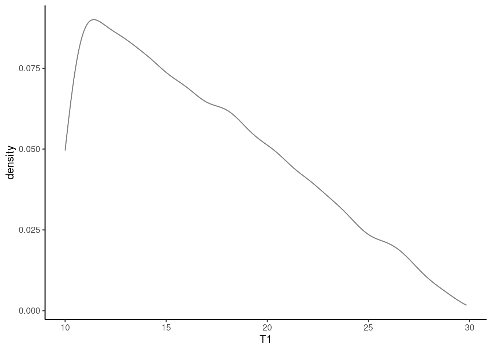

Chapter 16 Transformations
16.1 Objectives
- Given a discrete random variable, determine the distribution of a transformation of that random variable.
- Given a continuous random variable, use the cdf method to determine the distribution of a transformation of that random variable.
- Use simulation methods to find the distribution of a transform of single or multivariate random variables.
16.2 Homework
16.2.1 Problem 1
Let \(X\) be a random variable and let \(g\) be a function. By this point, it should be clear that \(\mbox{E}[g(X)]\) is not necessarily equal to \(g(\mbox{E}[X])\).
Let \(X\sim \textsf{Expon}(\lambda=0.5)\) and \(g(X)=X^2\). We know that \(\mbox{E}(X)=\frac{1}{0.5}=2\) so \(g(\mbox{E}(X))=\mbox{E}(X)^2=4\). Use R to find \(\mbox{E}[g(X)]\). Make use of the fact that R has rexp() built into it, so you don’t have to create your own random variable generator.
Let \(Y=X^2\).
sims<-rexp(10000,0.5)
mean(sims^2)## [1] 7.842478So, \(g(\mbox{E}(X))=4\) and \(\mbox{E}(g(X))\approx 7.84\).
16.2.2 Problem 2
Let \(X\sim \textsf{Binom}(n,\pi)\). What is the pmf for \(X+3\)? Make sure you specify the domain of \(Y\). [Note, we have used \(p\) for the probability of success in a binomial distribution in past lessons but some references use \(\pi\) instead.]
Let \(Y=X+3\): \[ f_Y(y)=\mbox{P}(Y=y)=\mbox{P}(X+3=y)=\mbox{P}(X=y-3)=f_X(y-3)=\binom{n}{y-3}\pi^{y-3}(1-\pi)^{n-y+3} \]
where \(3\leq Y \leq n+3\).
16.2.3 Problem 3
Let \(X\sim \textsf{Expon}(\lambda)\). Let \(Y=X^2\). Find the pdf of \(Y\).
CDF method: \[ F_Y(y)=\mbox{P}(Y\leq y)=\mbox{P}(X^2\leq y)=\mbox{P}(X\leq \sqrt y)=1-e^{-\lambda \sqrt y} \]
So, \[ f_Y(y)=\frac{\mathop{}\!\mathrm{d}}{\mathop{}\!\mathrm{d}y}F_Y(y)=-e^{-\lambda \sqrt y}\times\frac{-\lambda}{2\sqrt y}=\frac{\lambda e^{-\lambda \sqrt y}}{2\sqrt y} \]
for \(y >0\).
PDF method: \[ f_Y(y)=\lambda e^{-\lambda \sqrt{y}}\frac{1}{2\sqrt y}=\frac{\lambda e^{-\lambda \sqrt y}}{2\sqrt y} \]
for \(y>0\).
16.2.4 Problem 4
OPTIONAL: In exercise 3, you found the pdf of \(Y=X^2\) when \(X\sim \textsf{Expon}(\lambda)\). Rearrange the pdf to show that \(Y\sim \textsf{Weibull}\) and find the parameters of that distribution.
\[ f_Y(y)=\frac{\lambda e^{-\lambda \sqrt y}}{2\sqrt y}=\frac{\lambda}{2\sqrt y}e^{-\lambda \sqrt y}=\frac{\lambda^2}{2} \frac{1}{\lambda\sqrt y} e^{-\sqrt{\lambda^2 y}}=\frac{1/2}{1/\lambda^2}\left(\frac{y}{1/\lambda^2}\right)^{\frac{1}{2}-1}e^{-\left(\frac{y}{1/\lambda^2}\right)^{\frac{1}{2}}} \]
So, \(Y\sim \textsf{Weibull}\left(\alpha=\frac{1}{2},\beta=\frac{1}{\lambda^2}\right)\).
16.2.5 Problem 5
You are on a team of two. You are both tasked to complete an exercise. The time it takes you \(T_1\), and likewise, your teammate \(T_2\) to complete the exercise are independent random variables. Exercise completion time, in minutes, is distributed with the following pdf:
\[ f_T(t)= \frac{-t}{200}+\frac{3}{20}; 10 \leq t \leq30 \]
Figure 16.1 is a plot of the pdf.

Figure 16.1: pdf of \(T\)
We want to find the probability our combined time is less than 40 minutes, \(\mbox{P}(T_1 + T_2 < 40)\). We will solve this in steps in this problem. We are going to use a computational method because the mathematics is long and algebra intensive. You are welcome to try a mathematical solution if you like but we will not provide a mathematical solution.
- Use the
integrate()function to confirm this is a valid pdf.
integrate(function(x)-x/200+3/20,10,30)## 1 with absolute error < 1.1e-14- Find the cdf of \(T\) mathematically.
\[ \int_{10}^{x} \frac{-t}{200}+\frac{3}{20} \mathop{}\!\mathrm{d}t = \frac{-t^2}{400}+\frac{3t}{20}\bigg|_{10}^x = \frac{-x^2}{400}+\frac{3x}{20} - \frac{5}{4} \]
- To use the cdf to simulate random variables from this distribution, we need the inverse of the cdf which means we have to solve a quadratic equation. We can do this mathematically or just use the function
uniroot(). So first, we will make sure we understand how to useuniroot().
As a check, we know the median of the distribution is approximately 15.857. Here is code to show that 15.857 is approximately the median. We are integrating the pdf from 10 to 15.857 to confirm that this is 0.5.
integrate(function(x)-x/200+3/20,10,15.857)## 0.4999389 with absolute error < 5.6e-15Use uniroot() and your cdf to confirm that 15.857 is the median.
Solution.
uniroot(function(x)-x^2/400+3*x/20-5/4-.5,c(10,30))$root## [1] 15.85786- We will create a function to take a random uniform variable on the interval \([0,1]\) and return a value of our random variable, \(T\), exercise time. We can then use this function to simulate each of the exercise times and then create a new random variable that is the sum. Complete the
Rcode and check that it returns the median.
T <- function(y){
uniroot(function(x)"YOUR CDF HERE as a function of x"-y,c(10,30))$root
}We made it a function of \(y\) since we are using \(x\) in our cdf. There are two function calls here, can you see why?
T <- function(y){
uniroot(function(x)-x^2/400+3*x/20-5/4-y,c(10,30))$root
}T(.5)## [1] 15.85786- Vectorize the function you just created using the
Vectorize()function. Check that it is vectorized by enteringc(.5,.75)into the function. You should get 15.85786 20.00000 as an output.
T<-Vectorize(T)T(c(.5,.75))## [1] 15.85786 20.00000integrate(function(x)-x/200+3/20,10,20)## 0.75 with absolute error < 8.3e-15- We are ready. Let’s create a data frame with 10000 simulation for our time and another 10000 for our teammates. Remember to set a seed. At this point it may be hard to remember what we have done. The function we created takes as input a vector of random number from a uniform distribution and then applies the inverse cdf to generate a random sample from our given pdf.
T(runif(3))## [1] 27.47497 20.78648 10.96940set.seed(1144)
sim_exercise <- tibble(T1=T(runif(10000)),T2=T(runif(10000)))- Do a numerical summary of the data and plot a density plot of your exercise times to give us confidence that we simulated the process correctly.
inspect(sim_exercise)##
## quantitative variables:
## name class min Q1 median Q3 max mean
## ...1 T1 numeric 10.00066 12.69182 15.91884 20.04111 29.85565 16.69611
## ...2 T2 numeric 10.00028 12.65653 15.79768 20.03195 29.63950 16.64766
## sd n missing
## ...1 4.719835 10000 0
## ...2 4.716582 10000 0gf_dens(~T1,data=sim_exercise) %>%
gf_theme(theme_classic())
- Create the new variable that is the sum of the two exercise time and then find the probability that the sum is less than 40.
sim_exercise %>%
mutate(T_sum=T1+T2) %>%
summarise(prob=mean(T_sum<40))## # A tibble: 1 × 1
## prob
## <dbl>
## 1 0.835